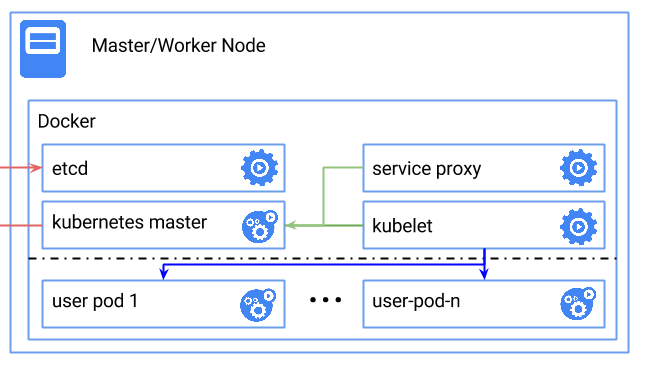

# 快速上手
目前，Kubernetes 支持在多种环境下的安装，包括本地主机（Fedora）、云服务（Google GAE、AWS 等）。然而最快速体验 Kubernetes 的方式显然是本地通过 Docker 的方式来启动相关进程。
下图展示了在单节点使用 Docker 快速部署一套 Kubernetes 的拓扑。

Kubernetes 依赖 Etcd 服务来维护所有主节点的状态。
# 启动 Etcd 服务。
docker run --net=host -d gcr.io/google_containers/etcd:2.0.9 /usr/local/bin/etcd --addr=127.0.0.1:4001 --bind-addr=0.0.0.0:4001 --data-dir=/var/etcd/data
# 启动主节点
启动 kubelet。
docker run --net=host -d -v /var/run/docker.sock:/var/run/docker.sock gcr.io/google_containers/hyperkube:v0.17.0 /hyperkube kubelet --api_servers=http://localhost:8080 --v=2 --address=0.0.0.0 --enable_server --hostname_override=127.0.0.1 --config=/etc/kubernetes/manifests
# 启动服务代理
docker run -d --net=host --privileged gcr.io/google_containers/hyperkube:v0.17.0 /hyperkube proxy --master=http://127.0.0.1:8080 --v=2
# 测试状态
在本地访问 8080 端口，可以获取到如下的结果：
$ curl 127.0.0.1:8080
{
"paths": [
"/api",
"/api/v1beta1",
"/api/v1beta2",
"/api/v1beta3",
"/healthz",
"/healthz/ping",
"/logs/",
"/metrics",
"/static/",
"/swagger-ui/",
"/swaggerapi/",
"/validate",
"/version"
]
}
# 查看服务
所有服务启动后，查看本地实际运行的 Docker 容器，有如下几个。
CONTAINER ID IMAGE COMMAND CREATED STATUS PORTS NAMES
ee054db2516c gcr.io/google_containers/hyperkube:v0.17.0 "/hyperkube schedule 2 days ago Up 1 days k8s_scheduler.509f29c9_k8s-master-127.0.0.1_default_9941e5170b4365bd4aa91f122ba0c061_e97037f5
3b0f28de07a2 gcr.io/google_containers/hyperkube:v0.17.0 "/hyperkube apiserve 2 days ago Up 1 days k8s_apiserver.245e44fa_k8s-master-127.0.0.1_default_9941e5170b4365bd4aa91f122ba0c061_6ab5c23d
2eaa44ecdd8e gcr.io/google_containers/hyperkube:v0.17.0 "/hyperkube controll 2 days ago Up 1 days k8s_controller-manager.33f83d43_k8s-master-127.0.0.1_default_9941e5170b4365bd4aa91f122ba0c061_1a60106f
30aa7163cbef gcr.io/google_containers/hyperkube:v0.17.0 "/hyperkube proxy -- 2 days ago Up 1 days jolly_davinci
a2f282976d91 gcr.io/google_containers/pause:0.8.0 "/pause" 2 days ago Up 2 days k8s_POD.e4cc795_k8s-master-127.0.0.1_default_9941e5170b4365bd4aa91f122ba0c061_e8085b1f
c060c52acc36 gcr.io/google_containers/hyperkube:v0.17.0 "/hyperkube kubelet 2 days ago Up 1 days serene_nobel
cc3cd263c581 gcr.io/google_containers/etcd:2.0.9 "/usr/local/bin/etcd 2 days ago Up 1 days happy_turing
这些服务大概分为三类：主节点服务、工作节点服务和其它服务。
# 主节点服务
apiserver是整个系统的对外接口，提供 RESTful 方式供客户端和其它组件调用；scheduler负责对资源进行调度，分配某个 pod 到某个节点上；controller-manager负责管理控制器，包括 endpoint-controller（刷新服务和 pod 的关联信息）和 replication-controller（维护某个 pod 的复制为配置的数值）。
# 工作节点服务
kubelet是工作节点执行操作的 agent，负责具体的容器生命周期管理，根据从数据库中获取的信息来管理容器，并上报 pod 运行状态等；proxy为 pod 上的服务提供访问的代理。
# 其它服务
Etcd 是所有状态的存储数据库；
gcr.io/google_containers/pause:0.8.0是 Kubernetes 启动后自动 pull 下来的测试镜像。